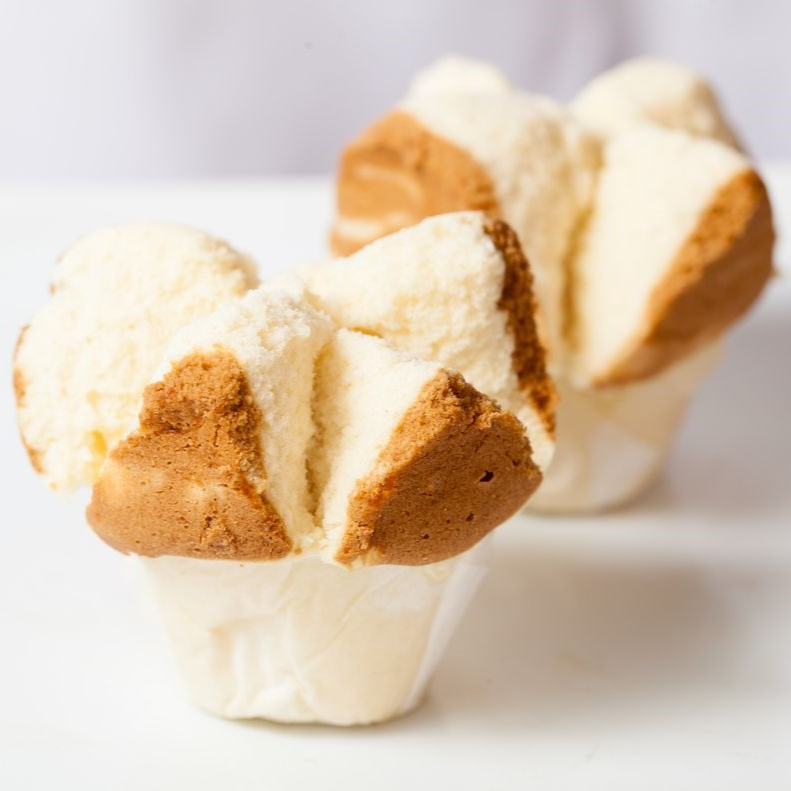

Resep bukan hanya untuk dibaca. Tetapi juga untuk dicoba. Mari kita coba!

Bahan :
Tepung terigu 500 gram
Gula pasir 500 gram
Telur 7 butir
Ovalet 1 sdm
Baking powder 1 sdt
Sprite 1 botol (390 ml)
Vanili bubuk 1/2 sdt
Pewarna makanan (sesuai selera)
Cup roti kukus
Cara membuat :
Masukkan semua bahan (kecuali pewarna dan cup) ke dalam ember plastik, kemudian mixer dengan kecepatan tinggi selama 10 menit.
Sisihkan adonan secukupnya dan beri pewarna, kemudian aduk hingga warna tercampur rata.
Tuang adonan asli ke dalam cup sekitar 3/4 dari ketinggian cup, lalu tuang sekitar 1 sdm adonan yang telah diberi pewarna di atas adonan asli. Ulangi hingga adonan habis.
Kukus adonan selama 25 menit.
Angkat roti kukus.
Menurut perkiraan, 1 resep ini dapat menjadi 20 roti kukus.